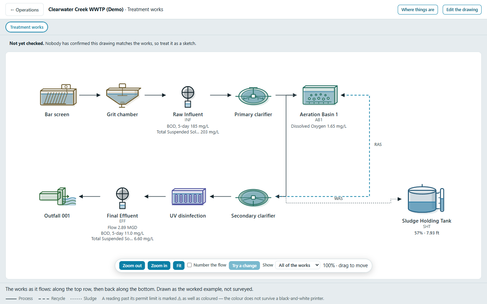
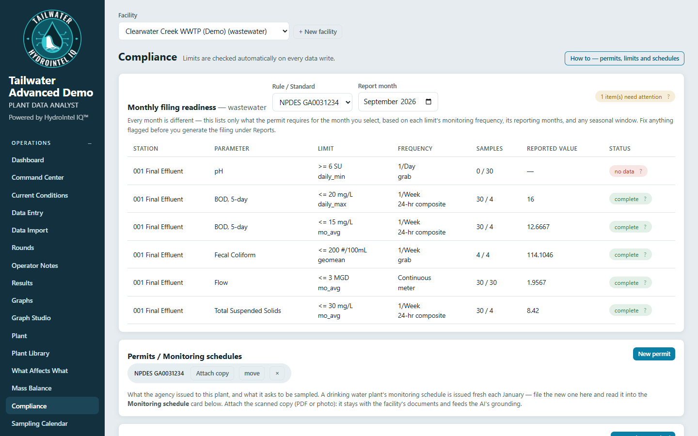
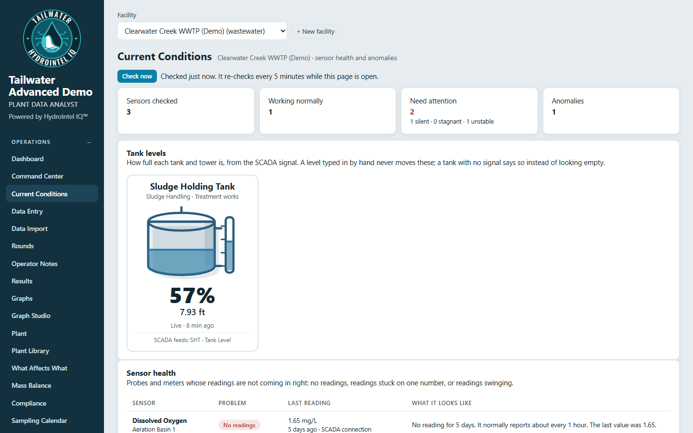
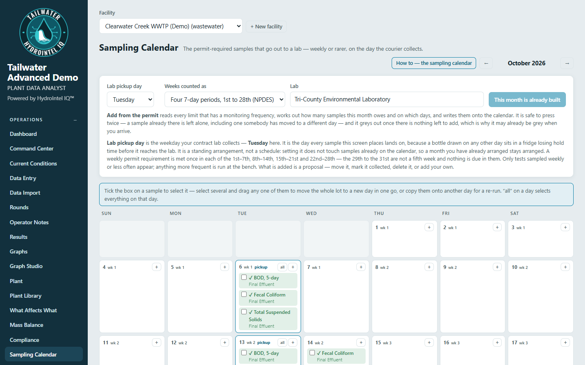
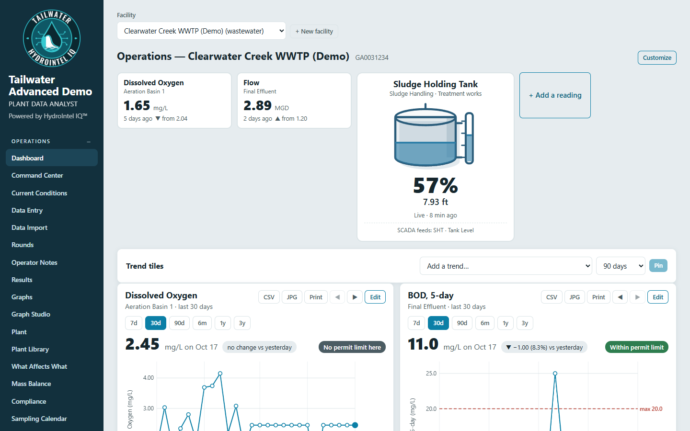

See it in action
Screens from the Tailwater demo, using sample plant data.





Sample data shown for demonstration. Plant names, permit numbers and readings are not from a real plant.
Screens from the Tailwater demo, using sample plant data.





Sample data shown for demonstration. Plant names, permit numbers and readings are not from a real plant.